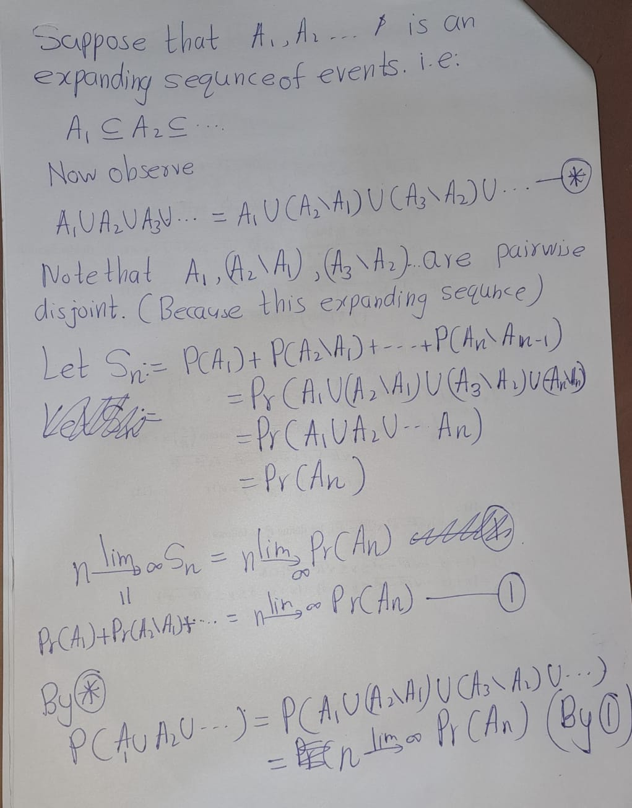

Chapter 2 Introduction
2.1 Events and Probability
Definition 2.1 Let \(\Omega\) be a non-empty set. A \(\sigma\)-field \(\mathcal{F}\) on \(\Omega\) is a family of subsets of \(\Omega\) such that:
- The empty set \(\emptyset\) belongs to \(\mathcal{F}\);
- If \(A\) belongs to \(\mathcal{F}\), then so does the complement \(\Omega \setminus A\);
- If \(A_1, A_2, \ldots\) is a sequence of sets in \(\mathcal{F}\), then their union \(A_1 \cup A_2 \cup \cdots\) also belongs to \(\mathcal{F}\).
Example 2.1 a
Definition 2.2 Let \(\mathcal{F}\) be a \(\sigma\)-field on \(\Omega\). A probability measure \(P\) is a function \(P : \mathcal{F} \to [0, 1]\) such that
- \(P(\Omega) = 1\);
- if \(A_1, A_2, \ldots\) are pairwise disjoint sets (that is, \(A_i \cap A_j = \emptyset\) for \(i \neq j\)) belonging to \(\mathcal{F}\), then \[ P\left(\bigcup_{i=1}^{\infty} A_i\right) = \sum_{i=1}^{\infty} P(A_i); \]
- The triple \((\Omega, \mathcal{F}, P)\) is called a probability space.
- The sets belonging to \(\mathcal{F}\) are called events.
- An event \(A\) is said to occur almost surely (a.s.) whenever \(P(A) = 1\).
Example 2.2 Let consider,
- \(\Omega=[0, 1]\) with the
- \(\sigma\)-field =\(\mathcal{F} = \mathcal{B}([0, 1])\) of Borel sets \(B \subseteq [0, 1]\), and
- Lebesgue measure \(P = \text{Leb}\) on \([0, 1]\).
Then \((\Omega, \mathcal{F}, P)\) is a probability space.
Recall that \(\text{Leb}\) is the unique measure defined on Borel sets such that [a, b] = b - a] for any interval \([a, b]\). (In fact, \(\text{Leb}\) can be extended to a larger \(\sigma\)-field, but we shall need Borel sets only.)
Exercise 2.1 Show that if \(A_1, A_2, \ldots\) is an expanding sequence of events, that is \[ A_1 \subseteq A_2 \subseteq A_3 \subseteq \cdots \]
then \[ P\left(\bigcup_{n=1}^{\infty} A_n\right) = \lim_{n \to \infty} P(A_n). \]
Similarly, if \(A_1, A_2, \ldots\) is a contracting sequence of events, that is, \[ A_1 \supseteq A_2 \supseteq A_3 \supseteq \cdots \]
then \[ P\left(\bigcap_{n=1}^{\infty} A_n\right) = \lim_{n \to \infty} P(A_n). \]
Hint: Write \(A_1 \cup A_2 \cup \cdots\) as the union of a sequence of disjoint events: start with \(A_1\), then add a disjoint set to obtain \(A_1 \cup A_2\), then add a disjoint set again to obtain \(A_1 \cup A_2 \cup A_3\), and so on. Now that you have a sequence of disjoint sets, you can use the definition of a probability measure. To deal with the product \(A_1 \cap A_2 \cap \cdots\), write it as a union of some events with the aid of De Morgan’s law.


Lemma 2.1 (Borei-Cantelli) Let \(A_1, A_2, \ldots\) be a sequence of events such that \(P(A_1) + P(A_2) + \cdots < \infty\) and let \(B_n = A_n \cup A_{n+1} \cup \cdots\). Then \(P(B_1 \cap B_2 \cap \cdots) = 0\).
Exercise 2.2 Prove the Borel-Cantelli lemma above.
Hint: \(B_1, B_2, \ldots\) is a contracting sequence of events.


2.2 Random Variables
Definition 2.3 If \(\mathcal{F}\) is a \(\sigma\)-field on \(\Omega\), then a function \(X : \Omega \to \mathbb{R}\) is said to be \(\mathcal{F}\)-measurable if
\[\{\omega \in \Omega : X(\omega) \in B\}=X^{-1}(\omega)\]
for every Borel set \(B \in \mathcal{B}(\mathbb{R})\).
If \((\Omega, \mathcal{F}, P)\) is a probability space, then such a function \(X\) is called a random variable.
Definition 2.4 The \(\sigma\)-field \(\sigma(X)\) generated by a random variable \(X : \Omega \to \mathbb{R}\) consists of all sets of the form \(\{X \in B\}\), where \(B\) is a Borel set in \(\mathbb{R}\).
Definition 2.5 The \(\sigma\)-field \(\sigma(\{X_i : i \in I\})\) generated by a family \(\{X_i : i \in I\}\) of random variables is defined to be the smallest \(\sigma\)-field containing all events of the form \(\{X_i \in B\}\), where \(B\) is a Borel set in \(\mathbb{R}\) and \(i \in I\).